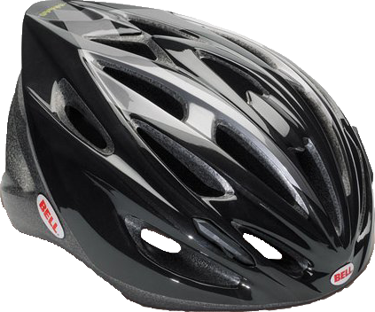
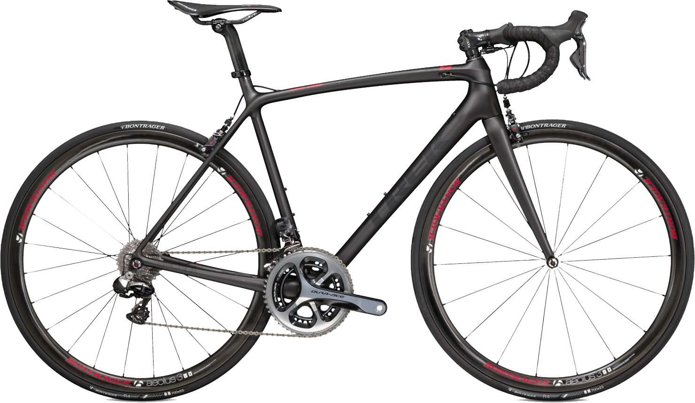
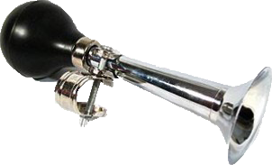

Recent Products
Bell Solar Helmet (★★★★☆) - $32.99
November 10, 2014 @ 3:25 PM

Last week, my 2 year old trusty helmet saved me from a nasty fall. I was sailing down a stright in the road
when I hit a nasty pothole. Luckily I was wearing layers that day as things have been getting cooler outside.
I bruised my hands and arms, but no other real damage - that is, execpt for my helmet.
My previous helmet had already seen better days, but this fall caused a large crack in the side of it. I rode
back home and got a new helmet at my local bike shop the next day.
After about a week of using this helmet, I can say that I am mostly happy with the purchase. It is there in
case of an accident like I had last week, however I do wish it allowed for a slightly larger head. Normally
my head will fit fine in a medium sized helmet, but since I have been wearing a hat lately, it is a tight fit.
If you need an inexpensive and solid helmet, I would say give this one a shot.
Link to the product page: Bell Solar Helmet
Trek Émonda SLR 9 (★★★★★) - $12,079.99
October 17, 2014 @ 10:12 AM

After my first ride on the new Émonda SLR 9, I knew that this was my new racing bike. I have loved every aspect
of it - from the sliky paint job to the premium Shimano drivetrain. This bike is the jackpot of both style as
well as performance
The bike comes in at a very high buy-in, but I promise you that you will love every moment of it.
As I continue to ride on this bike, I will give updates about it's speed, performance and durability - all things
to consider when purchasing a racing bike.
Link to the product page: Trek Émonda SLR 9
Bike Clown Horn (★☆☆☆☆) - $6.99
October 5, 2014 @ 7:15 AM

When one of my friends came back from vacation, he said he had a gift for me. Little did I know that I would
be recieving one of the most pointless and hilarious gifts any biker could ask for. Being the troublmaker that
my friend always is, he decided to bring home a clown horn for my bike.
After a relatively quick install of the horn, I was all set to go - except for my pride. He forced me to keep
it on while we took a relatively slow ride around the area (he likes to bike for distance, but not race). Upon
needing to actually use the thing however, I nearly fell off my bike when trying to signal to the person walking
in front of me.
This horn is a great toy, but definitely a toy and not made for a road bike. It caused almost more harm than
good yesterday and I decided to put on my old bell (which didn't need replacing to begin with!)
Link to the product page: Bike Clown Horn